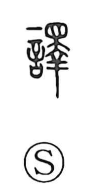

訳

Uncategorized
Kun: wake | On: yaku
translation ・ to translate ・ interpretation ・ reason ・ excuse
Explanation
Originally written 譯, this is a phono-semantic character with 言 “speech” providing the meaning and 睪 as the phonetic. Shirakawa notes that 睪 depicts the body of a dead animal, and he connects this to 釈, the idea of “unravelling” what has been scattered—an image that suits translation: taking utterance apart, analyzing it piece by piece, and re-expressing it in another language. The Shuowen already defines it as the person who conveys and translates the words of the peoples of the four quarters, and early sources record official interpreters—舌人 and 象胥—charged with this task. In Japanese, the native reading wake appears in expressions such as 言い訳, 内訳, and 訳が違う, preserving the nuance of sorting out, explaining, and giving the reason.